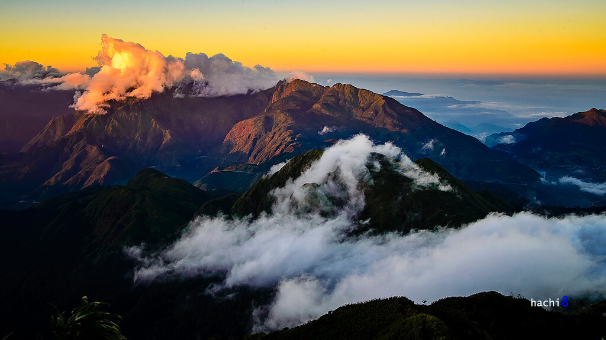
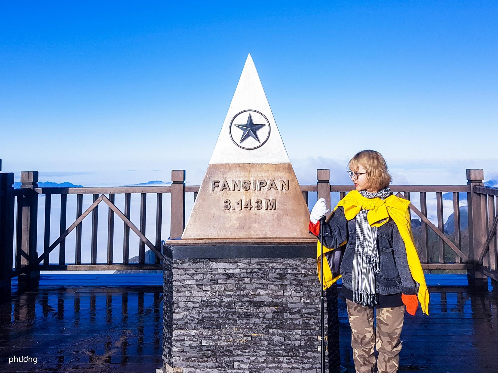

Fansipan (3.143m) – "Nóc nhà Đông Dương", không chỉ là đỉnh núi cao nhất Việt Nam mà còn là biểu tượng đầy tự hào cho ý chí và khát vọng chinh phục của những trái tim đam mê xê dịch. Tọa lạc tại dãy Hoàng Liên Sơn hùng vĩ, cách thị xã Sa Pa không xa, Fansipan luôn là điểm đến huyền thoại mà bất kỳ trekker nào cũng muốn đặt chân đến một lần trong đời.
Hành trình bộ hành chinh phục Fansipan sẽ đưa bạn xuyên qua lõi rừng nguyên sinh thuộc Vườn Quốc gia Hoàng Liên, nơi sở hữu thảm thực vật vô cùng phong phú, những vạt hoa đỗ quyên cổ thụ rực rỡ sắc màu và những con dốc đá đầy thách thức. Cảm giác bước đi giữa làn sương mờ rây rắc rồi vỡ òa kiêu hãnh khi chạm tay vào chóp inox huyền thoại giữa biển mây cuồn cuộn chắc chắn sẽ là ký ức không bao giờ phai.
Tour ghép khởi hành cuối tuần. Liên hệ Hidden Path để nhận lịch cụ thể từng tuần.
Đặc điểm nổi bật
Bao gồm & Không bao gồm
✓ Bao gồm
- Xe đưa đón Hà Nội – Lào Cai – Hà Nội
- Hướng dẫn viên chuyên nghiệp
- Porter địa phương hỗ trợ 1:1
- Toàn bộ bữa ăn trong hành trình
- Lều ngủ, túi ngủ, thảm nằm
- Gậy leo núi, nước uống
- Huy chương chinh phục đỉnh
✗ Không bao gồm
- Chi phí cá nhân phát sinh
- Đồ ăn vặt, nước uống riêng
- Trang phục và giày leo núi
- Bảo hiểm du lịch
- Chi phí phát sinh do thời tiết
Lịch trình tour chinh phục Ky Quan San
22h00: Xe giường nằm cao cấp đón đoàn tại điểm hẹn ở Hà Nội, khởi hành đi Sa Pa. Trưởng đoàn giao lưu, điểm danh và tóm tắt những lưu ý quan trọng. Quý khách nghỉ ngơi trên chiếc giường êm ái, dưỡng sức cho hành trình chinh phục "Nóc nhà Đông Dương".
Bữa ăn: Không. (Quý khách tự túc ăn tối trước giờ khởi hành).
Nghỉ đêm: Ngủ đêm trên xe giường nằm.
06h00: Xe đến thị xã Sa Pa trong sương sớm. Đoàn vệ sinh cá nhân, gửi lại đồ đạc không cần thiết và thưởng thức bữa sáng nóng hổi. Trưởng đoàn phổ biến kỹ năng leo núi và phân phát nước suối, găng tay.
08h30: Xe trung chuyển đưa đoàn đến Trạm Tôn (độ cao 1.900m). Sau khi làm thủ tục với Kiểm lâm, hành trình trekking chính thức bắt đầu. Đường đi ngày đầu tiên thoai thoải, băng qua những suối nhỏ và thảm thực vật đa dạng, xanh mướt của Vườn Quốc gia Hoàng Liên.
12h00: Đoàn dừng chân nghỉ ngơi và dùng bữa trưa tại điểm hạ trại 2.200m. Những món ăn do Porter chuẩn bị sẽ giúp bạn nạp lại năng lượng để tiếp tục đối mặt với các con dốc.
16h30: Đặt chân đến trạm nghỉ ở độ cao 2.800m. Nếu thời tiết ủng hộ, bạn sẽ được chiêm ngưỡng biển mây cuồn cuộn dưới ánh hoàng hôn rực rỡ. Quý khách nhận lán gỗ, thay đồ ấm để tránh gió lạnh.
18h30: Thưởng thức bữa tối BBQ thịnh soạn giữa núi rừng với thịt nướng thơm lừng, rau củ tươi mát. Cả đoàn quây quần bên nhau chia sẻ chuyện đời, chuyện nghề và đi ngủ sớm để chuẩn bị cho ngày mai.
Bữa ăn: Sáng, Trưa, Tối.
Nghỉ đêm: Ngủ lán gỗ tập thể (đã được trang bị chăn và tấm cách nhiệt).
04h00: Đoàn thức dậy thật sớm, ăn sáng nhẹ và khoác lên mình chiếc áo ấm nhất để bắt đầu chặng leo cuối cùng. Dưới ánh đèn pin đội đầu, mọi người men theo những bậc đá dốc đứng trong màn đêm tĩnh lặng, cái lạnh buốt giá của vùng núi cao.
06h30: Chạm tay vào chóp inox Fansipan – Nóc nhà Đông Dương ở độ cao 3.143m! Cảm xúc tự hào vỡ òa khi bạn đón những tia nắng bình minh đầu tiên rọi chiếu qua biển mây hùng vĩ. Đoàn chụp ảnh nhận huy chương kỉ niệm và tận hưởng khoảnh khắc chiến thắng bản thân.
08h00: Bắt đầu hạ độ cao, quay trở về lán 2.800m để thu dọn đồ đạc cá nhân.
12h00: Ăn trưa tại điểm dừng chân 2.200m. Đường xuống dốc nên di chuyển khá nhanh nhưng cần chú ý bước chân để bảo vệ khớp gối.
16h00: Về đến Trạm Tôn, xe đón đoàn quay lại trung tâm Sa Pa. Quý khách nhận lại đồ, tự do trải nghiệm ngâm mình trong bồn tắm lá thuốc của người Dao Đỏ, giúp xua tan mọi nhức mỏi sau 2 ngày leo núi (Chi phí tự túc).
19h00: Cả đoàn liên hoan bữa tối với đặc sản lẩu cá hồi, cá tầm trứ danh của Sa Pa, nâng ly chúc mừng chiến thắng.
22h30: Đoàn lên xe giường nằm để trở về Hà Nội. Dự kiến 04h30 sáng hôm sau sẽ có mặt tại điểm đón ban đầu. Chia tay và hẹn gặp lại!
Bữa ăn: Sáng, Trưa, Tối.
Độ khó
Tour leo núi Fansipan (cung Trạm Tôn) được đánh giá ở mức Trung bình khá. Địa hình phần lớn đã được xây dựng bậc thang đá ở những đoạn dốc cao, có lán nghỉ kiên cố. Cung đường này phù hợp với cả những người mới leo núi lần đầu nhưng có nền tảng thể lực tốt và ý chí bền bỉ.
Chuẩn bị trước tour
Thư viện ảnh

